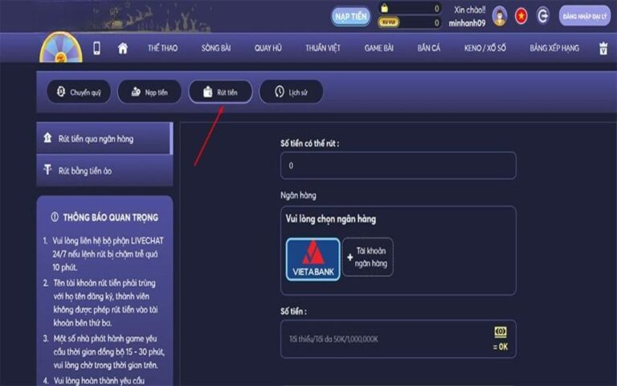
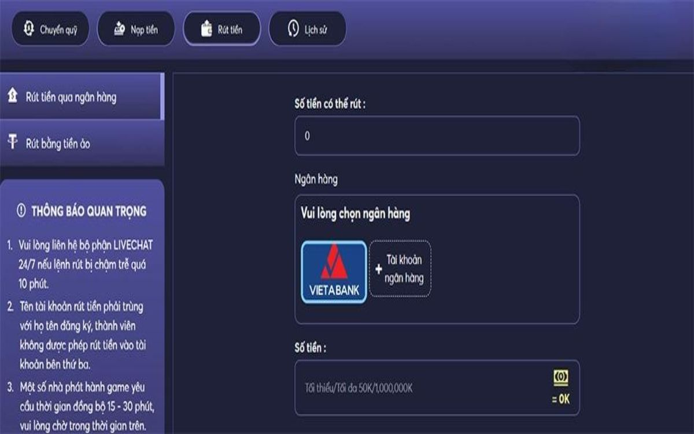
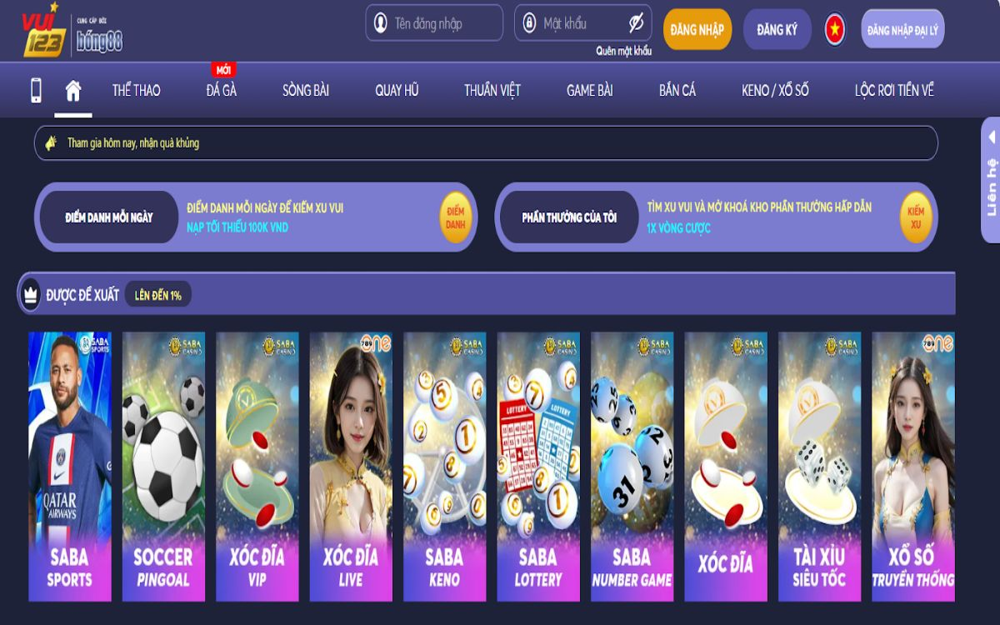

Giao dịch rút tiền Vui123 chắc chắn với bất cứ hội viên nào của nhà cái đều rất quan tâm đến việc thực hiện. Vì sao mỗi chiến thắng mà được nghe thấy tiếng tinh tinh tài khoản cộng thêm tiền. Thì chắc chắn sẽ rất vui mừng và gần như chúng ta đã thực hiện được chinh phục đỉnh cao cá cược.
Sau đây chúng tôi sẽ chia sẻ chi tiết từng thao tác rút tiền tại nhà cái Vui123 thông qua 4 bước sau đây:
Việc đầu tiên người chơi cần phải thực hiện đó là đăng nhập tài khoản cá nhân của mình tại nhà cái. Sau đó giao diện tài khoản của game thủ sẽ xuất hiện và người chơi cần kiểm tra số tiền dư trong đó để rút tiền
Sau khi thực hiện bước một thành công người chơi sẽ bấm chọn ô “rút tiền” và cửa sổ giao dịch rút hiện ra. Ở đây Người chơi có thể lựa chọn một trong hai hình thức rút tiền Vui123 là :
Tùy thuộc vào nhu cầu và sở thích của anh em sẽ lựa chọn hình thức rút phù hợp.
Sau khi anh em đã lựa chọn được hình thức mà mình muốn rút tiền về thì phải nhập các thông tin cần thiết cho từng hình thức rút. Cụ thể là:
Anh em cần phải chắc chắn rằng mình đã điền đúng vào đủ tất cả các thông tin theo yêu cầu của hệ thống để quá trình thực hiện giao dịch rút được nhanh chóng và thành công
Trước khi người chơi xác nhận lệnh yêu cầu rút tiền cần phải kiểm tra kỹ tất cả các thông tin mà mình đã nhập. Anh em cần phải chắc chắn rằng tất cả các thông tin đầy đủ chính xác rồi Mới bấm vào “Gửi yêu cầu” để hoàn tất.
Ngay sau đó hệ thống nhà cái sẽ gửi cho bạn một mã OTP về điện thoại đã đăng ký ở đây và anh em sẽ nhập mã này vào ô xác nhận rút tiền để chờ xử lý.
Mỗi người chơi chỉ được sử dụng tài khoản ngân hàng chính chủ để rút tiền. Nếu cược thủ nào bị phát hiện dùng tài khoản ảo, tài khoản của người khác thì đơn rút lập tức bị hủy bỏ. Khi tham gia cá cược tại Vui123, các tay chơi sẽ nhận được vô số khuyến mãi, tiền thưởng hấp dẫn. Tuy nhiên cần lưu ý rằng, tiền thưởng chỉ được rút khi người chơi thực hiện đủ vòng cược, số tiền cược mà sân chơi quy định.
Những giao dịch rút tiền qua các ngân hàng được xử lý khá nhanh, an toàn nên cược thủ có thể yên tâm tham gia cá cược tại sân chơi này. Ngoài ra tất cả đơn rút của game thủ sẽ hoàn toàn miễn phí.
Mọi giao dịch thông qua ngân hàng được nhà cái Vui123 đảm bảo không có sự can thiệp của bên thứ 3 cũng như thông tin khách hàng bị lộ. Nếu có bất kỳ sai sót nào làm ảnh hưởng đến tay chơi, trang cá cược sẽ chịu hoàn toàn trách nhiệm, đền bù thỏa đáng.
Cuối cùng, khi thực hiện giao dịch rút tiền Vui123 nếu có bất cứ trục trặc, mất mát gì người chơi phải ngay lập tức liên hệ đường dây nóng. Bộ phận nạp rút sẽ hướng dẫn, xử lý trong giây lát. Những quy định rút tiền này áp dụng cho tất cả người chơi, dù là các tân thủ hay tay chơi lão làng.
Vui123 đang là một trong những sàn cá cược trực tuyến nổi tiếng nhất, có số lượng người chơi nạp rút đông đảo. Chính vì vậy có nhiều tay chơi mới tham gia bỡ ngỡ khi rút tiền chậm. Là một người chơi lâu năm, mình đã tích lũy được một số mẹo khi rút tiền để chia sẻ cho anh em. Hy vọng nó sẽ giúp ích cho những tay chơi mới tham gia cá cược tại sân chơi này.
Hầu hết những tay chơi tại Vui123 thường chọn các khung giờ rảnh rỗi để chơi cũng như nạp, rút tiền Vui123. Nếu ngày thường thì sẽ rơi vào khoảng 11, 12 giờ trưa hoặc từ 8 giờ tối trở đi. Còn vào những ngày nghỉ, lễ tết thì hầu như mọi khung giờ đều có rất nhiều tay chơi hoạt động, rút tiền.
Chính vì thế những khung giờ cao điểm này không chỉ việc nạp tiền mà rút tiền cực kỳ khó khăn, mất thời gian. Thế nên anh em nên chọn rút tiền vào các khung giờ ít người tham gia chơi. Thời gian tốt nhất là vào các buổi sáng hoặc đêm muộn
Hiện nay Vui123 cho phép người chơi rút tiền hầu hết các ngân hàng. Thế nhưng để có thể giao dịch nhanh chóng, tay chơi nên chọn các ngân hàng đối tác độc quyền của Vui123 là: Ngân hàng VietinBank, ACB, TechcomBank, VietcomBank… Ngoài việc rút nhanh chóng, khi xảy ra sự cố nhà cái sẽ ngay lập tức liên hệ đối tác để hỗ trợ người chơi. Đây là một mẹo hiệu quả mà mình thường xuyên dùng.
Với toàn bộ các nội dung vừa được Vui123 khi phân tích ở trên độc giả đã hiểu hơn về giao dịch rút tiền Vui123. Hi vọng rằng đây sẽ là những thông tin hữu ích để giúp các bạn có thể thực hiện giao dịch này một cách trơn tru mà không gặp phải bất cứ rắc rối gì. Nếu muốn trở nên giàu có hơn thì đừng bỏ qua sân chơi này nhé.